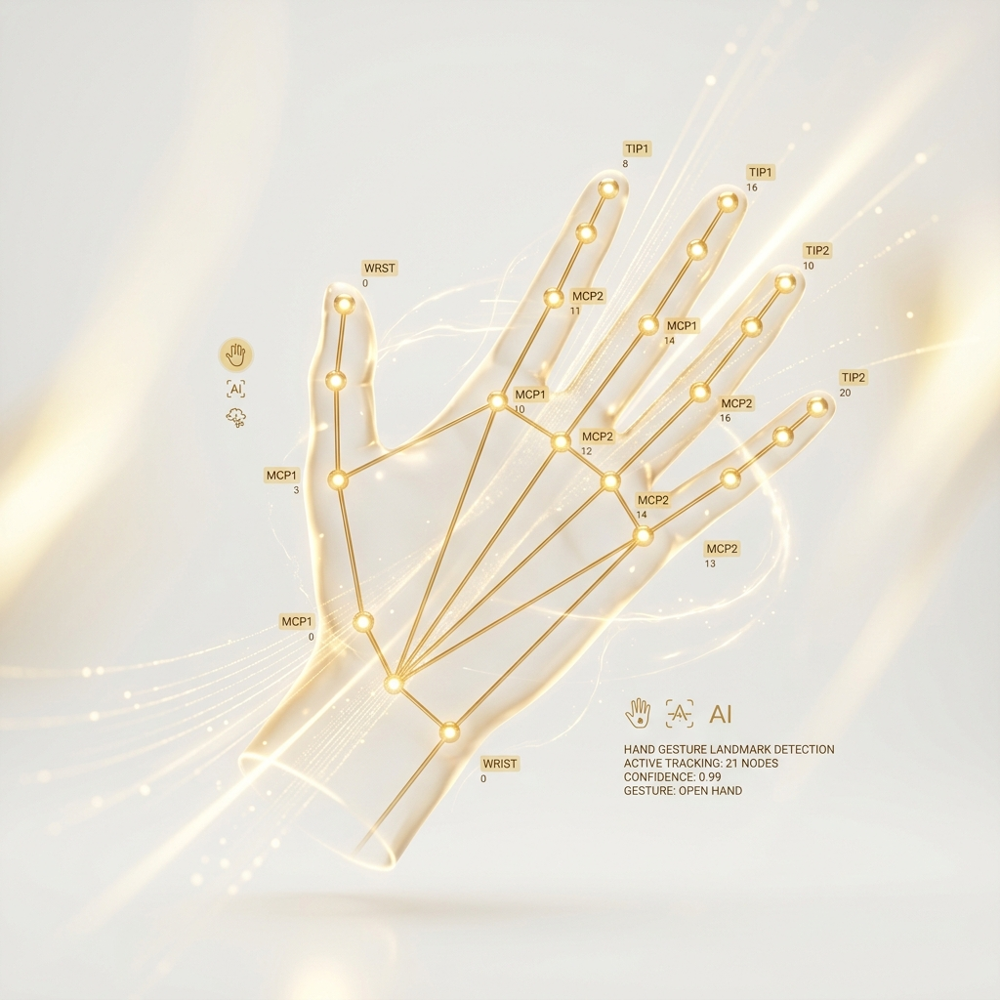

Recognize Hand
Gestures Instantly
The most advanced browser-based gesture recognition system. No downloads, no servers — pure on-device AI intelligence running at 30+ FPS.

How It Works
A 4-stage AI pipeline running entirely on your device
Capture
WebRTC streams your webcam at 30 fps via the secure MediaDevices API
Detect
MediaPipe neural network locates your hand and extracts 21 3D landmarks
Analyze
Heuristic math computes finger angles, distances and joint ratios
Classify
Gesture is classified and UI updates with color, sound, and feedback
Edge Computing
AI inference runs locally inside the browser via WebAssembly. Zero server latency.
MediaPipe Tracking
Tracks 21 hand joints in real-time using lightweight, edge-optimized neural networks.
Spatial Math
Runs geometric equations on-device to compute joint angles and distance vectors instantly.
SYSTEM READY
Point your camera at your hand
Digital Hand Print
Gesture Indicator
Gesture History
| Gesture | Count | Last Active | Status |
|---|---|---|---|
| Palm | 0 | — | Inactive |
| Victory | 0 | — | Inactive |
| Thumbs Up | 0 | — | Inactive |
| Fist | 0 | — | Inactive |
| Pointing | 0 | — | Inactive |
| Rock On | 0 | — | Inactive |
6 Gestures Recognized
Our AI recognizes these hand gestures with sub-50ms response time
Palm
Open hand, all fingers extended
Victory
Index & middle finger extended
Thumbs Up
Thumb extended upward
Fist
Closed hand, all fingers curled
Pointing
Index finger extended only
Rock On
Index & pinky extended
Real-World Use Cases
Transforming how humans interact with technology
Healthcare
Surgeons navigate patient records touchlessly during operations, maintaining a sterile environment.
Gaming & VR
Cast spells, interact with objects, and navigate menus using natural hand movements in VR.
Automotive
Drivers control infotainment and navigation with gestures, keeping eyes focused on the road.
Smart Home
Control lights, thermostats, and media players with simple hand waves from across the room.
Sign Language
Translate sign language gestures into text or synthetic speech in real-time, bridging gaps.
Accessibility
Enables individuals with motor impairments to control desktop systems via small hand gestures.
Live Metrics & Analytics
Real benchmark data from our gesture recognition engine
Accuracy
Controlled conditions
Real-World
Variable lighting
Consistency
Repeated gestures
Robustness
Skin tones & sizes
Gesture Accuracy by Type
Latency Distribution (ms)
Zero Setup Footprint
No downloads, SDKs, or hardware required. Runs natively in standard HTML5.
Sub-35ms Latency
GPU-accelerated tensor math runs locally on-device at 30+ FPS.
100% Privacy-First
Frames processed in-memory and discarded. GDPR and HIPAA compliant.
Universal Support
Compatible with standard webcams across iOS, Android, Mac, and Windows.
Under the Hood
Explore the internal architecture powering HAND.AI
Client-Side Runtime
Runs 100% in-browser via WebAssembly and WebWorkers. Zero installs.
Client-SideNeural Detection
MediaPipe tracks 21 coordinates of your hand in real-time.
ML EngineGeometric Analysis
Mathematical algorithms compute finger angles and joint ratios instantly.
Math CoreWeb Audio Feedback
Synth oscillator generates real-time acoustic validation notes.
Web AudioReactive Interface
UI styles, glows, and animations respond dynamically to detected signals.
Dynamic UIIsolated Privacy
Frames processed in local memory and instantly discarded. Zero server calls.
Zero TrackingTechnology Stack
Built with world-class open source technologies
MediaPipe
Google's ML framework for hand tracking
WebGL
GPU-accelerated graphics rendering
TensorFlow.js
In-browser machine learning inference
WebAssembly
Near-native execution performance
WebRTC
Secure real-time camera access
Edge AI
Zero cloud dependency, 100% private